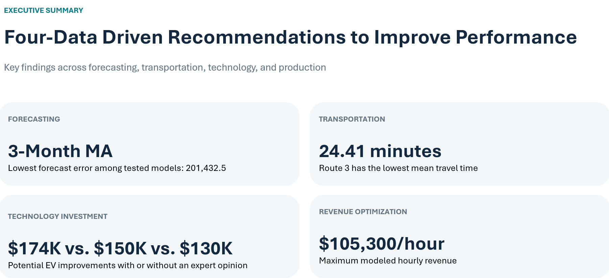

Executive Summary
Hillside Enterprises faced four business challenges involving shipment forecasting, transportation efficiency, technology investment, and product allocation.
Using quantitative modeling techniques in Microsoft Excel, I evaluated alternative strategies and developed recommendations designed to improve operational performance and support management decisions.

Project Objective
The objective of this case study was to apply quantitative analytical methods to four operational problems and translate the results into actionable business recommendations.
- Identify an accurate method for forecasting monthly shipments.
- Determine the most efficient transporation route.
- Evaluate whether investing in new software would be financially beneficial.
- Optimize production allocation to maximize hourly revenue.
1. Shipment Forecasting
I evaluated multiple forecasting techniques to predict future product shipments, including moving averages, exponential smoothing, and linear regression.
The models were compared using their reported mean squared error (MSE) to identify the most accurate forecasting approach.
| Forecasting Model | Reported Error |
|---|---|
| 3-Month Moving Average | 201,432.5 |
| Linear Regression | 204,357.4 |
| Exponential Smoothing | 212,752.6 |
Key Finding
The three-month moving average produced the lowest reported forecasting error among the evaluated models.
Using this approach, the forecast for January 2025 was approximately 6,681 shipments.
Recommendation
Use the three-month moving average as the preferred forecasting baseline, subject to consistent model validation.
2. Transportation Route Simulation
Methodology
I used Monte Carlo simulation to cmpare three potential transporation routes. Across 100 simulated runs, I evaluated average travel time, median travel time, and how frequently each route was quickest.
| Route | Average Time |
|---|---|
| Vine Street → Route 38 | 24.41 minutes |
| Vine Street → Route 70 | 25.05 minutes |
| Route 76 → Route 295 | 25.48 minutes |
Key Finding
Traveling via Vine Street and Route 38 produced the lowest average simulated travel time of 24.41 minutes.
This route was the fastest in 48% of simulations.
Recommendation
Prioritize this route for furher operational testing, while validating its performance under real traffic conditions.
3. Technology Investment Decisions
Methodology
I used decision-tree analysis and expected monetary value calculation to evaluate whether Hillside Enterprises should replace its existing software with a new AI-based system.
The analysis also considered hiring an expert who could provide additional information about the likelihood of the new software succeeding.
| Decision Scenario | Reported Expected Value |
|---|---|
| Keep Existing Software | $150,000 |
| Direct AI Upgrade | $130,000 |
| Decision with Expert Consultation | $174,000 |
Key Finding
Without additional information, retaining the existing software produced a higher expected value than upgrading directly.
Expert consultation increased the reported expected value of the decision strategy to $174,000, compared with $150,000 without expert information.
The expert charged $10,000, so the fee must be accounted for when comparing the final financial decision.
Recommendation
Avoid an unconditional AI software upgrade. Evaluate the expert consultation option after confirming the net expected value and associated costs.
4. Product Revenue Optimization
Methodology
I used linear programming and Excel Solver to determine an optimal allocation of 72 production lines across four product categories, subject to the modeled operational constraints.
| Product Category | Allocated Lines |
|---|---|
| Plain Protein Bars | 18 |
| Protein Bars with Real Fruit | 0 |
| Whole Grain Yogurt Bars | 30 |
| Whole Grain Yogurt Bars with Real Fruit | 24 |
Key Finding
The optimal modeled allocated generated a maximum hourly revenue of $105,300.
Recommendation
Evaluate the oprimized product allocation for implementation, ensuring that production capacity, resouce availability, and operating constraints remain feasible.
Business Recommendations
- Adopt the three-month moving average as the initial shipment forecasting method.
- Test traveling via Vine Street and Route 38 as the preferred transportation alternative.
- Retain existing software unless additional information supports a more valuable investment decision.
- Evalute the optimized production allocation to maximize revenue.
Skills Demonstrated
- Microsoft Excel and Excel Solver
- Time Series Forecasting
- Linear Regression
- Monte Carlo Simulation
- Decision Trees and Expected Values
- Linear Programming and Optimization
- Business Decision Analysis
- Data-Driven Recommendations
Project Limitations
This project was completed as an academic business case study. Findings are based on the provided data and model assumptions. Recommendations should be validated using real operational and financial information before implementation.